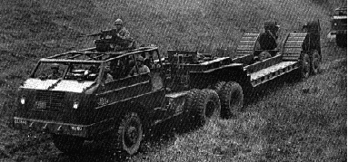

Tank Transporter: M26 A1 with trailer M15
M26 A1 with trailer M15: Year: 1943-1945. Number built: 519, of models M26 A1, M26A2Engine: Hall Scott type 440, 6 cylinders, Gasoline, 17, 865 cm3, 230 hp, top speed: 42 km/hr. Courtesy of Hans Goran Noren of Sweden.